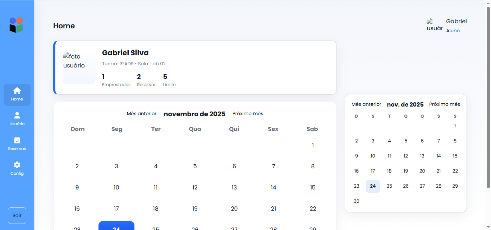
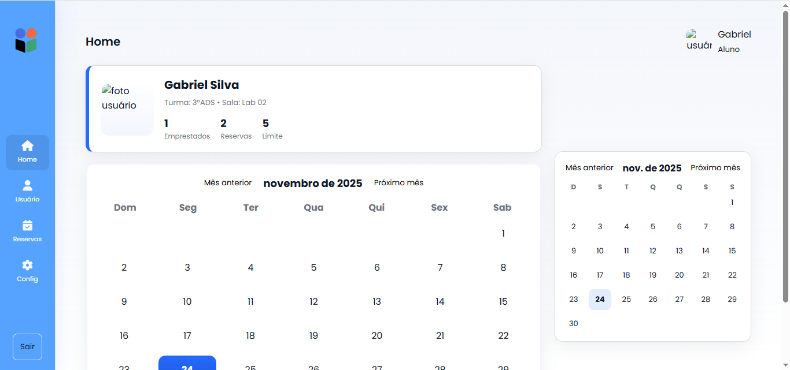

Transforme sua empresa em uma Potência Digital.
Na Sulien, criamos soluções inteligentes que conectam tecnologia, inovação e resultados reais.

Na Sulien, criamos soluções inteligentes que conectam tecnologia, inovação e resultados reais.
A Sulien é uma empresa de tecnologia especializada em softwares, sites e aplicativos, com foco em manter empresas e instituições sempre atualizadas na era digital.
Seu principal produto é o Leandix, aplicativo de gestão para salas e equipamentos escolares, que organiza e identifica recursos de forma simples, eficiente e inovadora.

O Leandix é um sistema de gestão escolar focado na organização e controle de recursos físicos — como salas, equipamentos, materiais e espaços compartilhados dentro da instituição.
Com uma interface moderna e intuitiva, o aplicativo permite que a escola registre, identifique e gerencie seus recursos em tempo real, garantindo mais controle, transparência e eficiência na administração.


 
